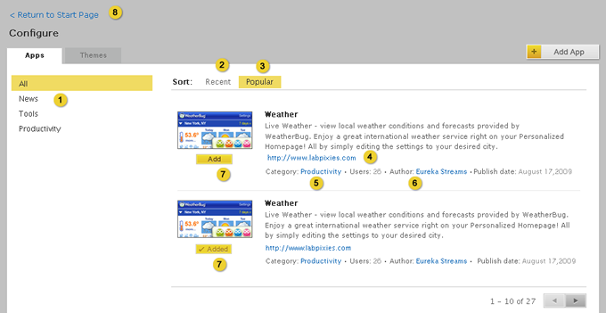

Home > Product Specification > Features > Browse a gallery of apps and themes
Browse a gallery of apps and themes
Manage gallery items
Watch a video
Overview
The gallery showcases a catalog of apps, tabs, and themes that a knowledge worker can use to customize pages. Organizations are responsible for vetting what items are available within the gallery for their employees.
Conditions of satisfaction
- The knowledge worker must be able to browse a list of apps by recently published.
- The knowledge worker must be able to browse a list of apps by popularity.
- The knowledge worker must be able to browse a list of apps by category.
- The knowledge worker must be able to browse a list of themes by recently published.
- The knowledge worker must be able to browse a list of themes by popularity.
- The knowledge worker must be able to browse a list of themes by category.
- The knowledge worker must be able to view an app’s title, thumbnail, website url, description, user count, author, category, and publish date.
- The knowledge worker must be able to view a theme’s title, thumbnail, website url, description, user count, author, category, and publish date.
User experience
Browse Apps

- Clicking the category name displays the apps for that category
- Sorts the list of apps by date added to the gallery.
- Sorts the list of apps by the number of users that added the app to their start page.
- Opens a new window and displays and link to the developer website
- Displays all apps in the specified category.
- Link to the Author’s email address.
- Adds app to the Start page. Focus remains on the App Configure page after an app is added. Feedback displays at top of page indicating “App has been added”.
- Closes the configuration window and returns the knowledge worker to the Start Page.
Browse Themes

- Clicking the category names displays the themes for that category
- Sorts the list of themes by date added to the gallery.
- Sorts the list of themes by the number of users that applied the theme to their start page.
- Displays all themes in the specified category.
- Link to the Author’s email address.
- Applies theme and returns knowledge worker to the Start Page. Feedback displays at top of page indicating “Theme has been applied”.
- Closes the configuration window and returns the knowledge worker to the Start Page.
Test Plans
Knowledge Worker
- Action: Browse a list of apps by recently published
- Verify the ability to browse recently published apps in the gallery
- Action: Browse a list of apps by popularity
- Verify the ability to browse apps in the gallery by popularity
- Action: Browse a list of apps by category
- Verify the ability to browse apps in the gallery by category
- Action: Browse a list of themes by recently published
- Verify the ability to browse recently published themes in the gallery
- Action: Browse a list of themes by popularity
- Verify the ability to browse themes in the gallery by popularity
- Action: Browse a list of themes by category
- Verify the ability to browse themes in the gallery by category
- Action: View an app’s title, thumbnail, description, user count, author, category, and publish date
- Verify the title is present
- Verify a thumbnail image is present
- Verify a description is present
- Verify the user count is present
- Verify the author is present
- Verify the category is present
- Verify the date published is present
- Verify all of these attributes are present for apps in the gallery
- Action: View a theme’s title, thumbnail, description, user count, author, category, and publish date
- Verify the title is present
- Verify a thumbnail image is present
- Verify a description is present
- Verify the user count is present
- Verify the author is present
- Verify the category is present
- Verify the date published is present
- Verify all of these attributes are present for themes in the gallery
Group Coordinator
- Action: Execute same tests as Knowledge Worker
- Verify tests executed successfully
Organization Coordinator
- Action: Execute same tests as Knowledge Worker
- Verify tests executed successfully
Root Organization Coordinator
- Action: Execute same tests as Knowledge Worker
- Verify tests executed successfully
| PAGE CONTENTS
Version 1.2
Documentation is also available for all of the following versions:
0.9 | 1.0 | 1.1
|